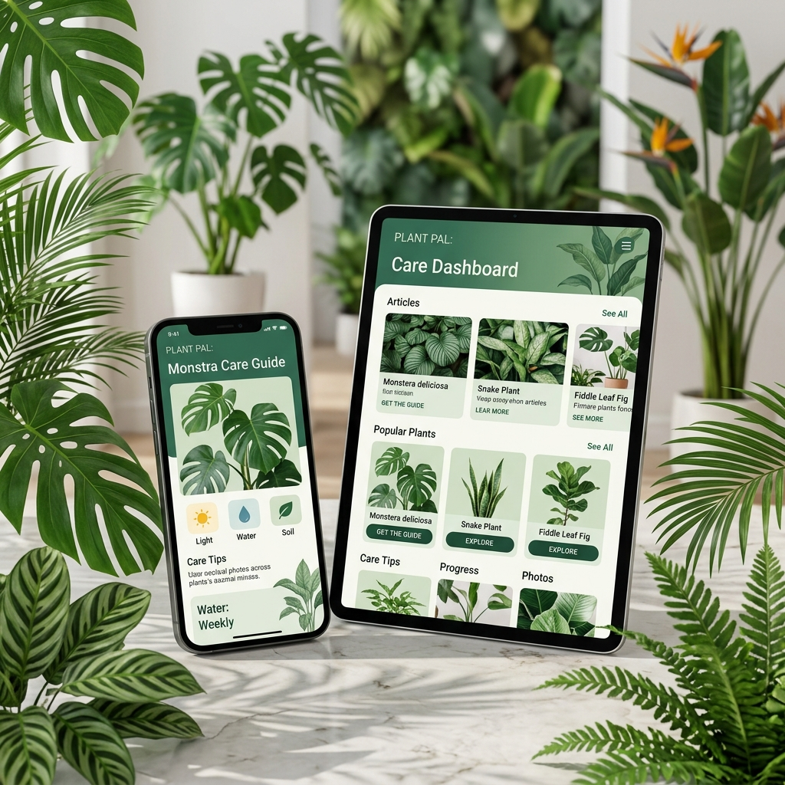

Suas plantas estão sofrendo e você quer testar receitas caseiras?
Responda este quiz de 30 segundos e descubra se a sua receita com sabão vai SALVAR ou MATAR a sua planta.
Analisando suas respostas...
De acordo com suas respostas, o risco de você queimar, sufocar ou perder a sua planta por aplicação incorreta é MUITO ALTO.
A Realidade Nua e Crua
A maioria das pessoas acha que o sabão verde é um "santo remédio" inofensivo porque é natural. Mas a verdade é que você pode estar tentando salvar sua planta com sabão… mas usando do jeito errado.
O sabão quebra a proteção natural da folha. Se a medida estiver forte demais, ou se o sol bater na hora errada, a folha simplesmente "frita". E se você não retirar o excesso, os poros da planta entopem e ela morre sufocada, mesmo sem praga nenhuma.
A Solução Segura
Para acabar com as pragas sem correr o risco de destruir as suas plantas, você não precisa abandonar o sabão verde. Você só precisa da medida, momento e método visual corretos.
Foi por isso que eu criei o Pode Passar Sabão na Planta? — O Kit Visual de Sabão Verde Seguro para Plantas.

O que você vai receber agora no seu celular:
- ✅ Guia Visual de Uso Seguro: Sem textos longos, apenas o que fazer e o que não fazer.
- ✅ Tabela de Diluição Exata: Nunca mais erre a medida "a olho".
- ✅ Checklist "Pode ou Não Pode": O que fazer antes, durante e depois da aplicação.
- ✅ Infográfico de Erros Comuns: O que queima a folha e como evitar.
- ✅ Mini Mapa de Pragas: Descubra exatamente onde o sabão funciona e onde é perda de tempo.
Você poderia gastar centenas de reais comprando mudas novas porque as suas morreram queimadas, ou comprando defensivos químicos caros e tóxicos...
Mas hoje, você leva o Kit Visual Completo para aplicar sabão com 100% de segurança por apenas R$ 47.
🟢 QUERO PROTEGER MINHAS PLANTAS (R$ 47) ➔🔒 Garantia rápida de 7 dias